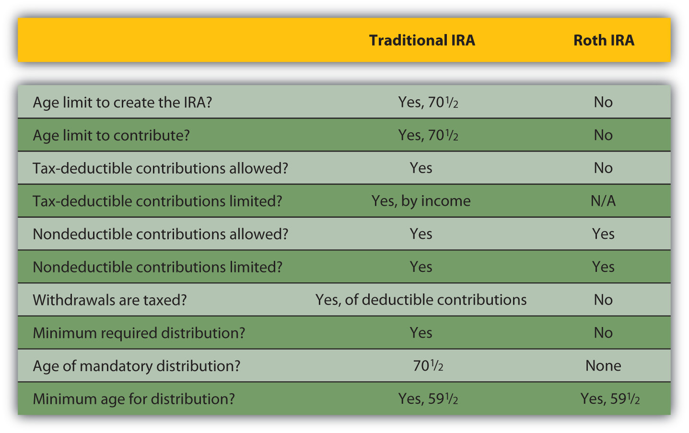

While knowing the numbers clarifies the picture of your needs, you must reconcile that picture with the realities that you face now. How will you be able to afford to save what you need for retirement?
There are several savings plans structured to help you save—some offer tax advantages, some don’t—but first you need to make a commitment to save.
Saving means not spending a portion of your disposable income. It means delaying gratification or putting off until tomorrow what you could have today. That is often difficult, as you have many demands on your disposable income. You must weigh the benefit of fulfilling those demands with the cost of not saving for retirement, even though benefit in the present is much easier to credit than benefit in the future. Once you resolve to save, however, employer, government, and individual retirement plans are there to help you.
Employers may sponsor pension or retirement plans for their employees as part of the employees’ total compensation. There are two kinds of employer-sponsored plans: defined benefit plans and defined contribution plans.
A defined benefit planA pension plan sponsored by an employer in which the employer commits to providing a specific amount of benefit based on wages and tenure to retired employees. is a retirement plan, sometimes called a pension planAn employer-sponsored, defined benefit plan providing a regular, specified amount of pension, based on wages and years of service., funded by the employer, who promises the employee a specific benefit upon retirement. The employer can be a corporation, labor union, government, or other organization that establishes a retirement plan for its employees. In addition to (or instead of) a defined benefit plan, an employer may also offer a profit-sharing plan, a stock bonus plan, an employee stock ownership plan (ESOP), a thrift plan, or other plan. Each type of plans has advantages and disadvantages for employers and employees, but all are designed to give employees a way to save for the future and employers a way to attract and keep employees.
The payout for a defined benefit plan is usually an annual or monthly payment for the remainder of the employee’s life. In some defined benefit plans, there is also a spousal or survivor’s benefit. The amount of the benefit is determined by your wages and length of service with the company.
Many defined benefit plans are structured with a vestingThe process of earning full ownership in an employer-sponsored retirement plan according to length of service. option that limits your claim on the retirement fund until you have been with the company for a certain length of time. For example, Paul’s employer has a defined benefit plan that provides for Paul to be 50 percent vested after five years and fully vested after seven years. If Paul were to leave the company before he had worked there for five years, none of his retirement fund would be in his account. If he left after six years, half his fund would be kept for him; after ten years, all of it would be.
With a defined benefit plan your income in retirement is constant or “fixed,” and it is the employer’s responsibility to fund your retirement. This is both an advantage and a disadvantage for the employee. Having your employer fund the plan is an advantage, but having a fixed income in retirement is a drawback during periods of inflation when the purchasing power of each dollar declines. In some plans, that drawback is offset by automatic cost of living increases.
Defined benefit plans also carry some risk. Most companies reserve the right to change or discontinue their pension plans. Furthermore, the pension payout is only as good as the company that pays it. If the company defaults, its pension obligations may be covered by the Pension Benefit Guaranty Corporation (PBGC)An agency of the federal government that guarantees defined benefit pensions in the case of employer default., an independent federal government agency. If not, employees are left without the benefit. Even if the company is insured, the PGBC may not cover 100 percent of employees’ benefits.
Founded in 1974, the PBGC is funded by insurance premiums paid by employers who sponsor defined benefit plans. If a pension plan ends (e.g., through the employer’s bankruptcy) the PBGC assumes pensions payments up to a limit per employee. Currently, the PBGC pays benefits to approximately 640,000 retirees and insures the pensions of about 1,305,000 employees.The Pension Benefit Guaranty Corporation, “Mission Statement,” http://www.pbgc.gov/about/about.html (accessed May 1, 2009). There is some concern, however, that if too many defined benefit sponsors fail, as could happen in a widespread recession, the PBGC would not be able to fully fund its obligations.
To avoid the responsibility for employee retirement funds, more and more employers sponsor defined contribution retirement plansA pension plan sponsored by an employer in which the employer commits to providing a specific amount of contribution to a retirement account owned by an active employee.. Under defined contribution plans, each employee has a retirement account, and both the employee and the employer may contribute to the account. The employer may contribute up to a percentage limit or offer to match the employee’s contributions, up to a limit. With a matching contribution, if employees choose not to contribute, they lose the opportunity of having the employer’s contribution as well as their own. The employee makes untaxed contributions to the account as a payroll deduction, up to a maximum limit specified by the tax code. The maximum for defined contribution plans is 25 percent of the employee’s compensation, with a cap in 2009 of $49,000. Defined contribution plans known as 401(k) plans had a maximum contribution limit in 2009 of $16,500.
Defined contribution plans have become increasingly popular since section 401(k) was introduced into the tax code in 1978. The 401(k) plansAn employer-sponsored defined contribution plan. Contributions may be made by employer, employee, or both. The employee’s contributions are tax deferred until distribution after age 59.5 and are limited by the Internal Revenue Code.—or 403b plans for employees of nonprofits and 457 plans for employees of government organizations—offer employees a pretax (or tax-deferred) way to save for retirement to which employers can make a tax-deductible contribution.
The advantages of a 401(k) for the employee are the plan’s flexibility and portability and the tax benefit. A defined contribution account belongs to the employee and can go with the employee when he or she leaves that employer. For the employer, there is the lower cost and the opportunity to shift the risk of investing funds onto the employee. There is a ceiling on the employer’s costs: either a limited matching contribution or a limit set by the tax code.
The employer offers a selection of investments, but the employee chooses how the funds in his or her account are diversified and invested. Thus, the employee assumes the responsibility—and risk—for investment returns. The employer’s contributions are a benefit to the employee. Employers can also make a contribution with company stock, which can create an undiversified account. A portfolio consisting only of your company’s stock exposes you to market risk should the company not do well, in which case, you may find yourself losing both your job and your retirement account’s value.
The federal government offers a mandatory retirement plan for all citizens except federal government employees and railroad workers, known as Social SecurityThe mandatory retirement program sponsored by the U.S. government to provide supplemental retirement income. It is funded by a tax (FICA) paid by employers and employees and by self-employed individuals who act as both employer and employee.. Social Security is funded by a mandatory payroll tax shared by employee and employer. That tax, commonly referred to as Federal Insurance Contributions Act (FICA), also funds Medicare (see Chapter 10 "Personal Risk Management: Insurance"). Social Security was signed into law by President Franklin D. Roosevelt in 1935 to provide benefits for old age and survivors and disability insurance for workers (OASDI). The Social Security Administration (SSA) was established to manage these “safety nets.”
Figure 11.6 President Franklin D. Roosevelt Signing the Social Security Act, August 14, 1935Library of Congress photo, LC-US262-123278, http://www.ssa.gov/history/fdrsign.html (accessed May 1, 2009).

We can never insure one hundred percent of the population against one hundred percent of the hazards and vicissitudes of life. But we have tried to frame a law which will give some measure of protection to the average citizen and to his family against the loss of a job and against poverty-ridden old age…It is, in short, a law that will take care of human needs and at the same time provide for the United States an economic structure of vastly greater soundness.
- Franklin D. Roosevelt, August 14, 1935Franklin D. Roosevelt, “Statement on Signing the Social Security Act,” August 14, 1935, http://www.fdrlibrary.marist.edu/odssast.html (accessed May 1, 2009).
Data provided by the SSA show that almost 51,500,000 beneficiaries receive an average monthly benefit of $1,057. The federal government’s total annual payment of benefits totals $653 billion. Most of the beneficiaries are retirees (63.6 percent) or their spouses and children (5.7 percent), but there are also survivors, widows, and orphans receiving about 12.6 percent of benefits and disabled workers, spouses, and children receiving approximately 18.3 percent of benefits.U.S. Social Security Administration, “Monthly Statistical Snapshot, March 2009,” 2009, http://www.ssa.gov/policy/docs/quickfacts/stat_snapshot/ (accessed May 1, 2009).
Social Security is not an automatic benefit but an entitlement. To qualify for benefits, you must work and contribute FICA taxes for forty quarters (ten years). Retirement benefits may be claimed as early as age sixty-two, but full benefits are not available until age sixty-seven for workers born in 1960 or later. If you continue to earn wage income after you begin collecting Social Security but before you reach full retirement age, your benefit may be reduced. Once you reach full retirement age, your benefit will not be reduced by additional wage income.
The amount of your benefit is calculated based on the amount of FICA tax paid during your working life and your age at retirement. Up to 85 percent of individual Social Security benefits may be taxable, depending on other sources of income.Retrieved from the Social Security Administration archives, http://www.socialsecurity.gov/history/fdrstmts.html#signing (accessed November 23, 2009). Each year, the SSA provides each potential, qualified beneficiary with a projection of the expected monthly benefit amount (in current dollars) for that individual based on the individual’s wage history.
Social Security benefits represent a large expenditure by the federal government, and so the program is often the subject of debate. Economists and politicians disagree on whether the system is sustainable. As the population ages, the ratio of beneficiaries to workers increases—that is, there are more retirees collecting benefits relative to the number of workers who are paying into the system.
Many reforms to the system have been suggested, such as extending the eligibility age, increasing the FICA tax to apply to more income (right now it applies only to a limited amount of wages, but not to income from interest, dividends, or investment gains), or having workers manage their Social Security accounts the same way they manage 401(k) plans. Some of these proposals are based on economics, some on politics, and some on social philosophy. Despite its critics, Social Security remains a popular program on which many Americans have come to rely. You should, however, be aware that Social Security can be amended and faces possible underfunding.
Keep in mind that in 1935 when Social Security was created, life expectancy for American males was only sixty-five, the age of Social Security eligibility. Social Security was never meant to be a retirement income, but rather a supplement to retirement income, merely “some measure of protection against…poverty-ridden old age.”Retrieved from the Social Security Administration archives, http://www.socialsecurity.gov/history/fdrstmts.html#signing (accessed November 23, 2009).
As part of the Federal Employees Retirement System (FERS), the U.S. government also offers special retirement plans to its employees, including a Thrift Savings Plan (TSP) for civilians employed by the United States and members of the uniformed services (i.e., Army, Navy, Air Force, Marine Corps, Coast Guard, National Oceanic and Atmospheric Administration, and Public Health Service).
Federal, state, and local government plans; plans for public school teachers and administrators; and church plans are exempt from the rules of the Employee Retirement Income Security Act of 1974 (ERISA) and from some rules that govern retirement plans of private employers under the Internal Revenue Code. In some states, public school teachers pay into a state retirement system and do not pay federal Social Security taxes (or receive Social Security benefits) for the years they are working as teachers.
Nevertheless, many plans for public employees are defined benefit plans providing annuities upon retirement, similar to but separate from plans for employees in the private sector.
Any individual can save for retirement without a special “account,” but since the government would like to encourage retirement savings, it has created tax-advantaged accounts to help you do so. Because these accounts provide tax benefits as well as some convenience, it is best to use them first in planning for retirement, although their use may be limited.
Individual retirement accounts (IRAs) were created in 1974 by ERISA. They were initially available only to employees not covered by an employer’s retirement plan. In 1981, participation was amended to include everyone under the age of 70.5.Wikipedia, “Legislative History of IRAs,” http://en.wikipedia.org/wiki/Individual_retirement_account (accessed May 23, 2012). IRAs are personal investment accounts, and as such may be invested in a wide range of financial products: stocks, bonds, certificate of deposits (CDs), mutual funds, and so on. Types of IRAs differ in terms of tax treatment of contributions, withdrawals, and in the limits of contributions.
The Traditional IRAAn individual retirement account for which contributions are tax deductible and withdrawals are taxed. is an account funded by tax-deductible and/or nondeductible contributions. Deductible contributions are taxed later as funds are withdrawn, but nondeductible contributions are not. In other words, you either pay tax on the money as you put it in, or you pay tax on it as you take it out.
A great advantage of a Traditional IRA is that principal appreciation (interest, dividend income, or capital gain) is not taxed until the funds are withdrawn. Withdrawals may begin without penalty after the age of 59.5. Funds may be withdrawn before age 59.5, but with penalties and taxes applied. Contributions may be made until age 70.5, at which time required minimum distributions (withdrawals) of funds must begin.
Because they create tax advantages, contributions to a Traditional IRA are limited, currently up to $5,000 (or $6,000 for someone over the age of fifty). That limit on deductible contributions becomes smaller (the tax benefit is phased out) as income rises. The Internal Revenue Service (IRS) provides a worksheet to calculate how much of your contribution is taxable with your personal income tax return (Form 1040).
For the Roth IRAAn individual retirement account for which contributions are not deductible but withdrawals are not taxed., created in 1997, contributions are not tax deductible, but withdrawals are not taxed. You can continue to contribute at any age, and you do not have to take any minimum required distribution. The great advantage of a Roth IRA is that capital appreciation is not taxed.
As with the Traditional IRA, contributions may be limited depending on your income. If you have both a Traditional and a Roth IRA, you may contribute to both, but your combined contribution is limited.
Figure 11.9 "Differences between the Traditional and the Roth IRAs" is an adaptation of a guide provided by the IRS to the key differences between a Traditional and a Roth IRA.U.S. Department of the Treasury, Publication 590, Internal Revenue Service, 2009.
Figure 11.9 Differences between the Traditional and the Roth IRAs
A rolloverA retirement plan that may accept or distribute funds from another qualified retirement account without tax consequence or penalty. is a distribution of cash from one retirement fund to another. Funds may be rolled into a Traditional IRA from an employer plan (401(k), 403b, or 457) or from another IRA. You may not deduct a rollover contribution (since you have already deducted it when it was originally contributed), but you are not taxed on the distribution from one fund that you immediately contribute to another. A transferThe movement of funds in a tax-advantaged retirement account from one trustee or asset manager to another that is not considered a withdrawal or distribution of funds. moves a retirement account, a Traditional IRA, from one trustee or asset manager to another. Rollovers and transfers are not taxed if accomplished within sixty days of distribution.
People who are self-employed wear many hats: employer, employee, and individual. To accommodate them, there are several plans that allow for deductible contributions.
A simplified employee pension (SEP)A retirement plan for employers with less than one hundred employees or for the self-employed, usually using individual IRAs (SEP-IRAs) as retirement accounts. is a plan that allows an employer with few or even no other employees than himself or herself to contribute deductible retirement contributions to an employee’s Traditional IRA. Such an account is called a SEP-IRA and is set up for each eligible employee. Contributions are limited: in any year they can’t be more than 25 percent of salary or $46,000 (in 2008), whichever is less. If you are self-employed and contributing to your own SEP-IRA, the same limits apply, but you must also include any other contributions that you have made to a qualified retirement plan.U.S. Department of the Treasury, Publication 560, Internal Revenue Service, 2009.
A savings income match plan for employees (SIMPLE)A retirement plan for employers with less than one hundred employees or for the self-employed. is a plan where employees make salary reduction (before tax) contributions that the employer matches. If the contributions are made to a Traditional IRA, the plan is called a SIMPLE IRA Plan. Any employer with fewer than one hundred employees who were paid at least $5,000 in the preceding year may use a SIMPLE plan. There are also SIMPLE 401(k) Plans. Deductible contributions are limited to $10,500 in 2008 for age forty-nine and below, for example.U.S. Department of the Treasury, Publication 560, Internal Revenue Service, 2009.
A Keogh PlanA tax-advantaged retirement plan for the self-employed. is another retirement vehicle for small or self-employers. It can be a defined benefit or a defined contribution qualified plan with deductible contribution limits.